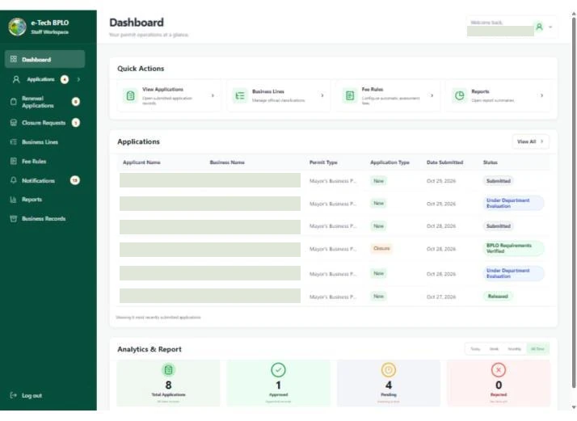
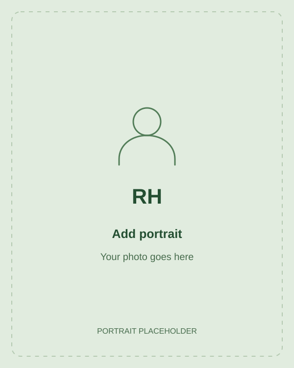
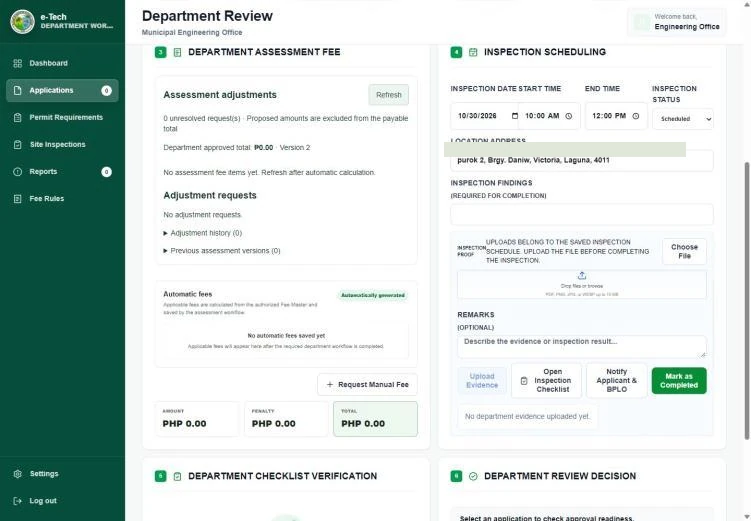
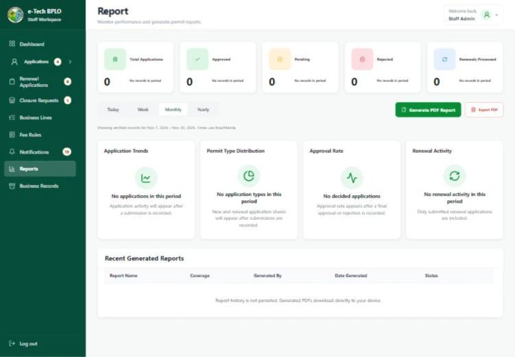

Jasmine L. Geronimo
Researcher
A web-based capstone system supporting new business permits, renewals, business closures, document review, inspection coordination, and application tracking for the BPLO of Victoria, Laguna.

Application information and supporting documents
Document verification and municipal office coordination
Application assessment and required clearances
Permit release following the required processing steps
Simplified workflow for research presentation.
Explore the complete processA centralized web-based capstone system developed, tested, and evaluated for business permit processing in Victoria, Laguna.
e-Tech brings business permit records, uploaded documents, processing activities, and application updates into one web-based platform for the Business Permits and Licensing Office (BPLO) of Victoria, Laguna.
The developed system supports new applications, renewals, business closure requests, document submission, departmental evaluation, assessment, and permit issuance. Applicants can monitor their applications, while authorized municipal users perform the tasks assigned to their roles.
The study combines system development, functional testing, and user acceptance evaluation. Its intended beneficiaries include business applicants, BPLO personnel and administrators, the municipality, and future researchers working on digital government services.
BS Information Technology researchers at Laguna State Polytechnic University, College of Computer Studies.
Researcher
Researcher

Researcher
Research Adviser
Developing a centralized licensing experience for Victoria, Laguna, through research, system development, and user acceptance evaluation.
The study identified gaps in the paper-based workflow that motivated the development of e-Tech.
The manuscript describes applicants visiting the municipal office to submit requirements, complete forms, and ask about their application status.
Handwritten forms and repeated encoding increase staff workload and create opportunities for long queues, processing delays, and data-entry errors.
Paper-based handling makes it harder to organize records and can lead to duplicate entries, misplaced documents, and inaccurate business information.
The study identified the absence of a unified workflow for submission, verification, application monitoring, notifications, inspection scheduling, and records management.
The study connects three objectives: develop the centralized system, test its specified functions, and evaluate acceptance among its intended users.
Design and develop a centralized electronic licensing system for Victoria, Laguna.
Test the UI/UX, frontend, and backend, focusing on Multi-Office Inspection Scheduling, QR Code Generation, E-mail Notification, Report Generation, Document Verification, and OCR.
Evaluate the system using Technology Acceptance Model (TAM)-based criteria: Quality Factors, Perceived Ease of Use, Perceived Usefulness, Attitude Toward Using, Behavioral Intention to Use, and User Experience.
A descriptive-developmental study supported by Agile development, black-box functional testing, and a Technology Acceptance Model (TAM)-based evaluation.
The descriptive component examines BPLO procedures, requirements, and operational challenges. Fact-finding uses on-site observation, personnel interviews, document and reference review, and adviser consultation to establish the system requirements.
The developmental component turns those requirements into a web-based licensing system. Agile iterations incorporate testing and stakeholder feedback, followed by functional testing and evaluation by intended users.
The manuscript reports black-box testing by 10 system testers. Expected and actual outcomes were compared across 31 test cases covering the six major features.
The final evaluation records 160 respondents answering 18 statements on a five-point Likert scale, producing 2,880 ratings. The analysis uses frequency, percentage, weighted mean, and standard deviation.
Purposive sampling identifies participants involved in BPLO transactions, with total enumeration of the administrative and personnel groups.
Role-based workspaces and connected modules support application submission, municipal processing, and system administration.
View assigned applications, record inspection schedules and findings, upload supporting evidence, and update inspection statuses.
Generate QR codes linked to approved permits and retrieve the public verification information for released business permits.
Notify applicants about submissions, revision requests, inspections, BFP processing, payment instructions and verification, and permit release.
Select reports, filter records or date ranges, generate summaries, and export or download report files for administrative use.
Upload and record documentary requirements, process verification outcomes, and identify documents that do not match the selected requirement.
Extract readable information from supported documents, display it in application fields, and allow applicants to review and edit the extracted data.
Three selected screens illustrate permit processing, inspection coordination, and reporting. Select a screenshot to enlarge it.
Screenshots show documented interface states, not live operational figures. Personal details have been masked.
Permit processing · BPLO Staff Admin
A staff view of recent applications, processing statuses, and dashboard totals.

Field coordination · Municipal Engineering
Inspection details and supporting evidence sit beside the department assessment workflow.

Administrative insight · Reports
A focused reporting view for application trends and permit-workflow summaries.
Chapter IV reports the functional testing outcomes and the user evaluation of the developed E-Tech application.
4.23 / 5
Strongly Agree
Combined weighted mean across 160 respondents.
The questionnaire covered six criteria using a five-point Likert scale.
| Respondent group | Respondents | Weighted mean | SD | Interpretation |
|---|---|---|---|---|
| Super User | 1 | 4.89 | 0.32 | Strongly Agree |
| BPLO Admin | 2 | 4.00 | 0.79 | Agree |
| BPLO Personnel | 12 | 4.61 | 0.53 | Strongly Agree |
| Business Applicants | 145 | 4.20 | 0.75 | Strongly Agree |
| Overall | 160 | 4.23 | 0.75 | Strongly Agree |
SD means standard deviation. The overall weighted mean follows the manuscript’s combined individual ratings, rather than an unweighted average of the four group means. Verbal interpretations follow Table 56.
31 / 31 passed
100% reported test-case pass rate
All reported cases passed across the six major features, with no failed cases recorded.
Results below follow the manuscript’s test-case counts and Passed statuses.
Scroll horizontally to see all table columns on smaller screens.
| Feature | Test cases | Passed | Failed | Pass rate |
|---|---|---|---|---|
| Optical Character Recognition (OCR) | 4 | 4 | 0 | 100% |
| E-mail Notification | 9 | 9 | 0 | 100% |
| Document Verification | 3 | 3 | 0 | 100% |
| Multi-Office Inspection Scheduling | 5 | 5 | 0 | 100% |
| QR Code Generation and Verification | 5 | 5 | 0 | 100% |
| Report Generation | 5 | 5 | 0 | 100% |
| Total functional testing | 31 | 31 | 0 | 100% |
The reported results show favorable user evaluations and successful execution of the specified functional test cases. The manuscript identifies navigation, document submission, application review, and workflow simplicity as areas for further improvement, especially for BPLO administrators and business applicants.
These results apply to the reported test cases and evaluation sample. The manuscript recommends continued verification and monitoring during actual municipal operations, alongside future evaluation of processing time, transaction efficiency, reliability, and long-term user satisfaction.
Explore the project repository, live application, demo videos, and research manuscript, then visit the five public pages.
Explore the source code for the e-Tech Business Process and Licensing System.
Open the deployed application for business permit and licensing services in Victoria, Laguna.
View the recorded system demonstration and walkthrough available in Google Drive.
The research manuscript is kept private and is not included in this public website.
Explore the public portal, business services, application requirements, process guide, and frequently asked questions. These pages are a static interface showcase.
Landing page and main introduction
A public-facing page in the e-Tech interface showcase.
Open pageAvailable permit-related services
A public-facing page in the e-Tech interface showcase.
Open pageDocuments required for applications
A public-facing page in the e-Tech interface showcase.
Open pageApplication and review workflow
A public-facing page in the e-Tech interface showcase.
Open pageGuidance for users of the portal
A public-facing page in the e-Tech interface showcase.
Open pageNote: The original portal pages load some fonts, images and Tailwind CSS from third-party servers and therefore need an internet connection for their full appearance.
This research website is a static GitHub Pages presentation. Account access and application processing belong to the separate live system.